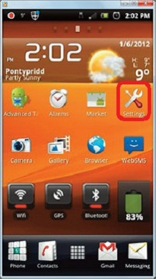
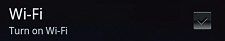
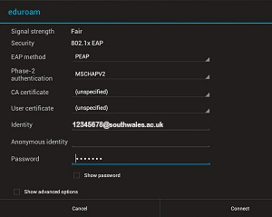
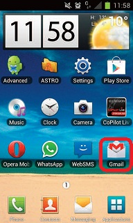
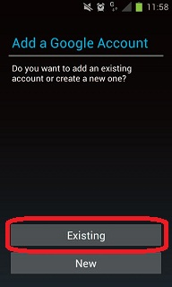
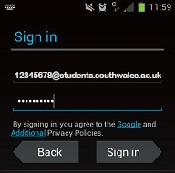
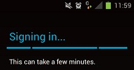
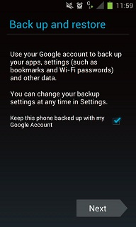

Below is a step by step guide which will walk you through the process of connecting to the Eduroam wireless service, on to configuring access to your email accounts and on to printing your work directly from your device (where available)
The Eduroam service provides you with wireless network connections for your own equipment.
The service is now available at a number of University of South Wales locations as displayed on our campus wireless map .
This guide will show you how to connect to Eduroam wirelessly if you are using a mobile phone or other devices with Android OS.
If you would like to connect a computer with other operating systems, please contact ITS Customer Support Services , or see our other Eduroam guides .
In order to access the Eduroam network you must ensure that you have activated your university IT account and agree to be bound by our IT service terms and conditions whilst using our services.
IT account activation can be performed via the SSAA webpage: https://ssaa.southwales.ac.uk
If your devices wi-fi adapter is already switched on, please skip to setting up your device on step 3.
Locate and load up your devices settings, on our example, the setting icon in on the home screen.

Click on the wireless & networks icon.
Click on the Wi-Fi settings icon.
Click on the ‘Turn On’ Wi-Fi settings tickbox.

Locate a suitable area where a wireless signal can be received (see our campus wireless map for full details).
A list of available wireless networks should now be listed, if in an appropriate area Eduroam should be listed, click on the Eduroam entry.
You will now be prompted to enter configuration information for the Eduroam wireless network.

Please enter the following.
EAP method : PEAP
Phase-2 authentication : MSCHAPV2
CA Certificate : (unspecified)
User Certificate : (unspecified)
Identity : Please enter your student number followed by southwales.ac.uk, e.g: 12345678@southwales.ac.uk
Anonymous Identity : Blank
Password : Please enter your current University password
Upon completion – please click on the ‘Connect’ button in bottom right hand side of the screen, this
will initiate the device connecting to Eduroam, within a few seconds, your device will be connected.
Your device should now be configured successfully for use with the Eduroam wireless network, in
order to start using the service, please run your favourite web browser.
Print this guide… (PDF)
To use your University e-mail on your mobile device, you first need to configure the device to connect
to the University e-mail servers.
As the University student e-mail is run by Google, configuring the University email system is identical to
setting up a Gmail account.
The example devices in the following guide are Android 4 (Ice Cream Sandwich), but can the instructions provided should be similar to those required for use with other versions of android.
Before proceeding to configure your device, please ensure that it is currently connected to the internet either via WiFi, or by any 3g service offered by your mobile network operator, as your device will need to be able to connect to Gmail in order to complete the process successfully.
Once you have connected, on your Android device, locate and load the ‘Gmail’ application, as shown below:

You will now be prompted whether you would like to add a Google account, please select ‘Existing’.

You will now be prompted to enter their email address and password, please enter your
full University e-mail address, i.e: 12345678@students.southwales.ac.uk in the email box, and your current University
password in the password box, upon completion – and then click on the ‘Sign In’ button.

Your mobile device will now sign in/verify your e-mail account details.

Upon signing in the first time you will be prompted if you want to use your University account as a method of backing up and restoring settings on your phone, please read and tick/untick the box according to your preference.

Click on ‘Next’ to complete the set up process.
Your University e-mail account should now be configured on your device, which should now begin syncronising your device with your accounts.
Print this guide… (PDF)
Documents to be printed can be sent directly via email to mobileprinting@southwales.ac.uk
Documents sent via the mobile print service can then be released and collected at the multi function printers located at any of the following locations:
Treforest
Hirwaun Building : H114
Glynneath Building : G406 G502
Learning Resources Centre : Lower & Upper levels
Ty Crawshay : A101
Glyntaf
Aneurin Bevan building : GT7115
Elaine Morgan building : GT141
Alfred Russell Wallace building : GT9102
Learning Resources Centre: Lower & Upper levels
ATRiuM
3rd Floor : Outside CA320
2nd Floor : Next to the Print Bureau
1st Floor : Opposite CA113
Learning Resources Centre : CA25
Print this guide… (PDF)